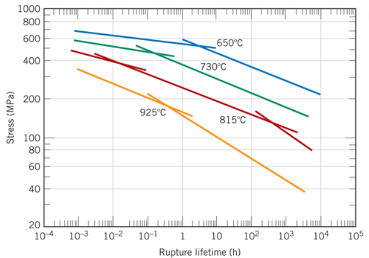
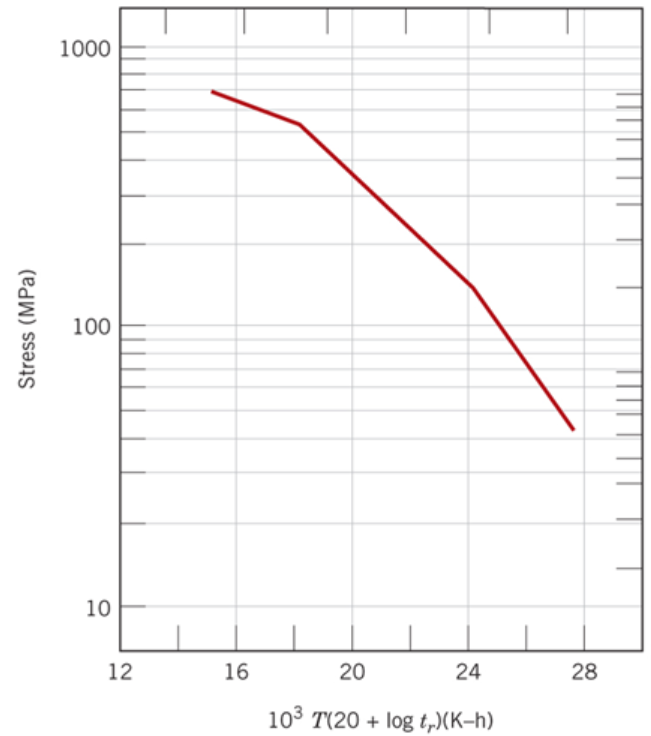
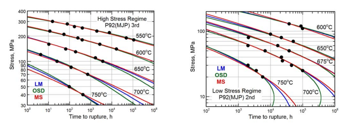
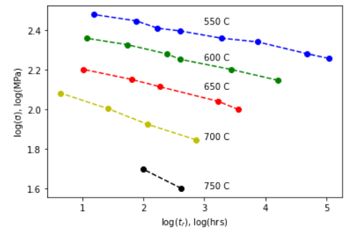
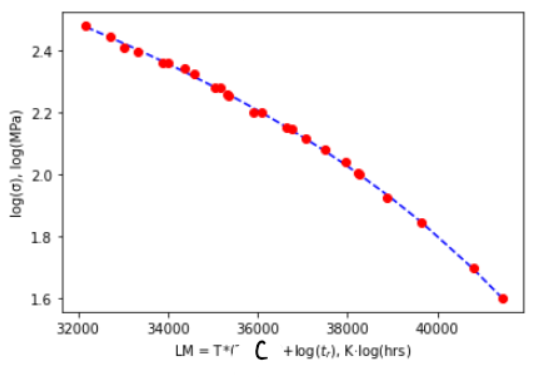

Collecting Data from Log scales: Creep Analysis
Contents
11. Collecting Data from Log scales: Creep Analysis#
Learning Objectives
After completing this lesson, you should be able to:
reproduce data from images containing log scales
create a Larsen-Miller plot from creep data (stress vs rupture time) at various temperatures
have a better understanding of the “C” parameter used in creep analysis
This lesson also reinforces the the ability to:
load cal() and selectdata() functions from the utilities notebook using
%run getpix_utilities.ipynbfit data using the lmfit package
I’m going to look at some data from your Callister textbook and verify that the fitting parameter given in the text is correct. The figure below is for an S-590 superalloy Fe-Co-Cr-Ni and is given as Figure 8.31 Callister 9th edition.
11.1. Creep - Rupture data#
{kind=link}
According to the Callister textbook the above data collapses to one curve (shown below) when you take the data and replot it as \((Log(\sigma)\) vs T (C + \(Log(t_r)\)) where \(\sigma\) is in MPa, T is in Kelvin, \(t_r\) is in hours and C is a fitting parameter which according to your textbook is 20.
{kind=link}
Figure 8.33 Callister 9th edition. Note that the x-axis in the figure below has been divided by \(10^3\) i.e. the point 24 is really 24000.
Let’s get the stress, rupture data from the first figure above.
%run getpix_utilities.ipynb
Help on function cal in module __main__:
cal(pixpts, plotpts, datatoconvert)
pixpts = list of three pixel points (typically along axes)
plotpts = list of three points corresponding to pixpts but in plot units
datatoconvert = list of pixel points to convert to plot coordinates
Help on function selectdata in module __main__:
selectdata(path_to_image_file, fig_size_as_tuple=(6, 6), color='blue')
path_to_image_file example: r"C:/Users/Sean/images/xrd data.png"
pixel data stored in global variable "pixel_positions"
fig_size_as_tuple e.g. (8,12) This adjusts the image size shown.
selectdata('../images/11_fig_8.31_callister_9th.png',(8,6) )
{kind=link}
Notice the points I selected above were the minimum needed to define each straight line segment.
# pixel_positions=[[610.0293439311366, 135.02436764624815],
# [333.57450522145916, 308.1576979360273],
# [154.0583761892011, 382.35769793602736],
# [624.3906342537173, 218.3996334198983],
# [546.6003116730722, 273.4512463231241],
# [235.43902135049143, 395.5222140650596],
# [142.0906342537172, 419.45769793602733],
# [617.209989092427, 286.6157624521564],
# [307.24547296339466, 413.4738269682854],
# [146.87773102791078, 439.80285922634994],
# [642.3422471569431, 328.5028592263499],
# [398.2003116730721, 429.0318914844145],
# [148.07450522145916, 457.7544721295757],
# [712.951924576298, 65.21253664570474],
# [87.03902135049144, 64.01576245215637],
# [87.03902135049144, 503.2318914844144]]
d925C=pixel_positions[0:3]
d815C=pixel_positions[3:7]
d730C=pixel_positions[7:10]
d650C=pixel_positions[10:13]
pxpts=pixel_positions[13:16]
logplotpts=np.log10(np.array([[10**5, 20],[10**(-4), 20],[10**(-4), 1000]])) #Remember you need the log of the data since we have a log scale
Important
When we have log axes, we need to take the log of the plot points used for calibration. In this problem, both axes have log scales so we take the log of both the x and y values. This won’t always be the case. The data will be converted to log values as well so we will plot these using linear axes as shown below.
%matplotlib inline
cal650C=cal(pxpts, logplotpts, d650C)
cal730C=cal(pxpts, logplotpts, d730C)
cal815C=cal(pxpts, logplotpts, d815C)
cal925C=cal(pxpts, logplotpts, d925C)
plt.plot(cal650C[:,0], cal650C[:,1], 'b--', marker='o')
plt.plot(cal730C[:,0], cal730C[:,1], 'g--', marker='o')
plt.plot(cal815C[:,0], cal815C[:,1], 'r--', marker='o')
plt.plot(cal925C[:,0], cal925C[:,1], 'y--', marker='o')
plt.text(3, 2.5,'650 C')
plt.text(3, 2.25,'730 C')
plt.text(3, 2.05,'815 C')
plt.text(3, 1.7,'925 C')
plt.xlabel('log($t_r$), log(hrs)')
plt.ylabel('log(σ), log(MPa)')
plt.show()
11.2. Larsen-Miller Plot#
According to the Callister textbook this data will collapse onto one curve if we plot log(stress) vs T*(20+log(\(t_r\))). The value T*(C+log(\(t_r\))) is known as the Larsen-Miller parameter, LM. The parameters must be given in the correct units: \(T\) here is the temperature in Kelvin, \(t_r\) is the rupture time in hours, and stress is in MPa. The value C is a fitting parameter which is equal to 20 for the data we are using and should result in the 4 curves in the plot above collapsing into one curve as shown in the plot below. For homework, you will have a different value for C.
Important
For the L-M plot, the parameters: T, \(t_r\), and \(\sigma\) must be given in units: Kelvin, hours, and MPa respectively. Compare the plot below with that above.
c_value=20 # C parameter
lm650C=(650+273)*(c_value+cal650C[:,0]) #calculating LM (x-axis) for each temperature with a C = 20
lm730C=(730+273)*(c_value+cal730C[:,0])
lm815C=(815+273)*(c_value+cal815C[:,0])
lm925C=(925+273)*(c_value+cal925C[:,0])
plt.plot(lm650C, cal650C[:,1], 'b--') #our stress values (y-axis) are already in log(MPa) units
plt.plot(lm730C, cal730C[:,1], 'g--')
plt.plot(lm815C, cal815C[:,1], 'r--')
plt.plot(lm925C, cal925C[:,1], 'y--')
plt.xlabel('LM = T*(20+log($t_r$), K·log(hrs)')
plt.ylabel('log(σ), log(MPa)')
plt.text(18000, 2, f"C = {c_value}", fontsize=14)
plt.show()
The data did indeed collapse onto one line! Rather than using the plot above to read off the LM value (x-axis) for a specific stress value (y-axis), we will just fit the data to a polynomial function, $\(LM = a0+a1 \ log(\sigma)+a2\ log(\sigma)^2+a3\ log(\sigma)^3 +...\)\( so \)log(\sigma)$ is our independent variable.
First, let’s take a look at what we get for a C value of 15 vs 25 to get a feel for how sensitive this data collapse is. From 15 to 20 the curves continue to collapse onto each other, from 20 to 25 the curves start to spread again.
fig, (axes1, axes2) = plt.subplots(nrows=1, ncols=2,figsize=(8, 4))
c_value=15
lm650C=(650+273)*(c_value+cal650C[:,0]) #calculating LM for each temperature and a C = 20
lm730C=(730+273)*(c_value+cal730C[:,0])
lm815C=(815+273)*(c_value+cal815C[:,0])
lm925C=(925+273)*(c_value+cal925C[:,0])
axes1.plot(lm650C, cal650C[:,1], 'b--')
axes1.plot(lm730C, cal730C[:,1], 'g--')
axes1.plot(lm815C, cal815C[:,1], 'r--')
axes1.plot(lm925C, cal925C[:,1], 'y--')
axes1.set_xlabel(f'LM = T*({c_value}+log($t_r$), K·log(hrs)')
axes1.set_ylabel('log(σ), log(MPa)')
axes1.text(15000, 2, f"C = {c_value}", fontsize=14)
c_value=25
lm650C=(650+273)*(c_value+cal650C[:,0]) #calculating LM for each temperature and a C = 20
lm730C=(730+273)*(c_value+cal730C[:,0])
lm815C=(815+273)*(c_value+cal815C[:,0])
lm925C=(925+273)*(c_value+cal925C[:,0])
axes2.plot(lm650C, cal650C[:,1], 'b--')
axes2.plot(lm730C, cal730C[:,1], 'g--')
axes2.plot(lm815C, cal815C[:,1], 'r--')
axes2.plot(lm925C, cal925C[:,1], 'y--')
axes2.set_xlabel(f'LM = T*({c_value}+log($t_r$), K·log(hrs)')
axes2.set_ylabel('log(σ), log(MPa)')
axes2.text(25000, 2, f"C = {c_value}", fontsize=14)
fig.tight_layout()
11.3. Fit L-M data to a polynomial#
Rather than using the plot above to read off the LM value (x-axis) for a specific stress value (y-axis), we will just fit the data to a polynomial function, $\(LM = a0+a1 \ log(\sigma)+a2\ log(\sigma)^2+a3\ log(\sigma)^3 +...\)\( so \)log(\sigma)$ is our independent variable. Let’s switch the axes on our plot so the x-axis is the independent variable i.e., log(stress).
# x-data is cal650C[:,1],cal730C[:,1],cal815C[:,1],cal925C[:,1]
# y-data is lm650C, lm730C, lm815C, lm925C, respectively
c_value=20 # C parameter
lm650C=(650+273)*(c_value+cal650C[:,0]) #calculating LM (x-axis) for each temperature with a C = 20
lm730C=(730+273)*(c_value+cal730C[:,0])
lm815C=(815+273)*(c_value+cal815C[:,0])
lm925C=(925+273)*(c_value+cal925C[:,0])
plt.plot(cal650C[:,1],lm650C, 'b--', marker='o')
plt.plot(cal730C[:,1],lm730C, 'g--', marker='o')
plt.plot(cal815C[:,1],lm815C, 'r--', marker='o')
plt.plot(cal925C[:,1],lm925C, 'y--', marker='o')
plt.xlabel('log(σ), log(MPa)')
plt.ylabel(f'LM = T*({c_value}+log($t_r$), K·log(hrs)')
plt.title('Moving the LM parameter to the y-axis')
plt.show()
Let’s combine our data sets so we can fit them. We also want the final dataset to be sorted by the x-values.
# several methods to combine the data sets into one
# option 1: use np.append
# x=np.append(np.append(np.append(cal650C[:,1],cal730C[:,1]),cal815C[:,1]),cal925C[:,1])
# y=np.append(np.append(np.append(lm650C, lm730C),lm815C),lm925C)
# option 2: use np.hstack
# x=np.hstack((cal650C[:,1], cal730C[:,1], cal815C[:,1], cal925C[:,1]))
# y=np.hstack((lm650C, lm730C, lm815C, lm925C))
#option 3: use the "*" expression
x=(*cal650C[:,1], *cal730C[:,1], *cal815C[:,1], *cal925C[:,1])
y=(*lm650C, *lm730C, *lm815C, *lm925C)
# now let's put data together as (x,y) pairs so we can sort by x values
xypairs=np.array(list(zip(x,y))) #put all our data together as x,y pairs
xysorted=xypairs[xypairs[:,0].argsort()] #sort our data according to the x value, argsort() returns indices of sorted array
# separate data back to 1D lists for x-values and y-values
logσ=xysorted[:,0]
lmparam=xysorted[:,1]
# check our combined dataset
plt.plot(logσ,lmparam, 'bo')
plt.xlabel('log(σ), log(MPa)')
plt.ylabel(f'LM = T*({c_value}+log($t_r$), K·log(hrs)')
plt.title('Combined data set')
plt.show()
11.4. Fit the above data to a polynomial#
from lmfit import models, Model, Parameters
# define our polynomial fit
def poly(x, a0, a1, a2, a3):
return(a0+a1*x+a2*x**2+a3*x**3)
model = Model(poly)
# print(f'parameter names: {model.param_names}')
# print(f'independent variables: {model.independent_vars}')
# now we help the fitting process by giving starting values and bounds on our parameters
params = Parameters()
# parameters given as: (NAME, VALUE, VARY, MIN, MAX, EXPR, BRUTE_STEP)
params.add_many(('a0', 1, True, None, None, None, None),
('a1', 1, True, None, None, None, None),
('a2', 1, True, None, None, None, None),
('a3', 1, True, None, None, None, None))
# our x and y data
xdata=logσ
ydata=lmparam
result = model.fit(ydata, params, x=xdata) #now we perform the fit to our x & y data with the given params
dely = result.eval_uncertainty(x=xdata, sigma=2) #uncertainty
# only need below if you have more than one model added together (see week 8 lesson)
#comps = result.eval_components()
plt.plot(xdata, ydata, 'b.') #our x,y data blue dots
#plt.plot(xdata, result.init_fit, '--', label='initial fit')
plt.plot(xdata, result.best_fit, '-', label='best fit')
plt.fill_between(xdata, result.best_fit-dely, result.best_fit+dely,color='C1', alpha=0.2,
label='2-$\sigma$ uncertainty band')
plt.legend(loc='best')
plt.xlabel('log(σ), log(MPa)')
plt.ylabel(f'LM = T*({c_value}+log($t_r$), K·log(hrs)')
plt.show()
# print(result.fit_report())
print(f'Best Values: {result.best_values}')
Best Values: {'a0': 85088.31535611271, 'a1': -77663.44333214953, 'a2': 35898.44004296161, 'a3': -6044.939139260627}
Note
Notice the use of uncertainty bands in the plot above. Pretty sweet! I just asked for the delta y corresponding to an uncertainty of 2 sigma (95% confidence interval) result.eval_uncertainty(x=xdata, sigma=2) then plotted two additional lines result.best_fit - dely and result.best_fit + dely using fill_between().
11.5. Example problem: Determining rupture lifetime for alloy S-590.#
Problem Statement
What is the rupture lifetime at 780 C under a stress load of 355 MPa?
We just need to calculate the LM parameter from our polynomial fit above and set that equal to T*(20+log(\(t_r\))) and solve for the rupture time.
# recall our fitted parameters a0, a1, a2, a3, a4
result.best_values.values()
dict_values([85088.31535611271, -77663.44333214953, 35898.44004296161, -6044.939139260627])
# recall our poly function: poly(x, a0, a1, a2, a3)
# where x is log(stress)
_LM=poly(np.log10(355),*result.best_values.values()) # LM value at 355 MPa
_LM
20239.882869178284
from sympy import solve, Eq, symbols, log
tr = symbols('tr',real = True)
# Eq(left hand side, right hand side)
temp=780 #Celsius
eq1=Eq((temp+273)*(c_value+log(tr,10)), _LM)
sol=solve(eq1,tr)
print(f'Creep rupture would occur after {sol[0]:.3f} hrs')
Creep rupture would occur after 0.166 hrs
11.6. A closer look at the \(C\) parameter. How would we use a fitting routine to find the value \(C\) ?#
The routine below will vary this C parameter until the optimal fit is achieved. This is different from other fitting cases we have had in that our fitting parameter is actually changing the data set being fit. We will use a “cost” function with a minimization method to do this, optimize.minimize().
from lmfit import models, Model, Parameters, minimize
from scipy.optimize import curve_fit
from scipy import optimize
Now we define our cost function which is the entire fitting routine we used above but now for a given value of “C” we calculate the error between the fit and the data points and return \((1-r^2)\) where \(r^2\) is the coefficient of determination.
def cost(c, cal650C, cal730C, cal815C, cal925C):
def poly(x, a0, a1, a2, a3):
return(a0+a1*x+a2*x**2+a3*x**3)
global popt, logσ, lmparam, result, fit_vals #made these global so we have access to these after the minimize fit
lm650C=(650+273)*(c+cal650C[:,0])
lm730C=(730+273)*(c+cal730C[:,0])
lm815C=(815+273)*(c+cal815C[:,0])
lm925C=(925+273)*(c+cal925C[:,0])
#appending all our data together
x=np.append(np.append(np.append(cal650C[:,1],cal730C[:,1]),cal815C[:,1]),cal925C[:,1])
y=np.append(np.append(np.append(lm650C, lm730C),lm815C),lm925C)
#placing our data as x,y pairs using the function zip
#then sorting so the x values are in order
temp=np.array(list(zip(x,y))) #put all our data together as x,y pairs
temp=temp[temp[:,0].argsort()] #sort our data according to the x value
#here's now the data we will fit
logσ=temp[:,0] #the x data is actually the log of stress
lmparam=temp[:,1] #the y data is the larsen miller value calculated above
###########
model = Model(poly)
params = Parameters()
# parameters given as: (NAME, VALUE, VARY, MIN, MAX, EXPR, BRUTE_STEP)
params.add_many(('a0', 1, True, None, None, None, None),
('a1', 1, True, None, None, None, None),
('a2', 1, True, None, None, None, None),
('a3', 1, True, None, None, None, None))
result = model.fit(lmparam, params, x=logσ) #now we perform the fit to our x & y data with the given params
fit_vals = result.best_values.values()
residuals = lmparam - poly(logσ, *fit_vals) #calculate the difference between the fit and the data
ss_res = np.sum(residuals**2) #calculate the sum of the squares
ss_tot = np.sum((lmparam-np.mean(lmparam))**2) #calculate the sum of the squares relative to the mean value
r_squared = 1 - (ss_res / ss_tot) # now find the Rsquared value for the fit
return 1-r_squared #return 1-Rsquared - this is what should be minimized on a good fit
Let’s see what our fits look like for a C of 15 vs a C of 20. Remember the better fit is the one with the smallest value returned from our cost function.
from IPython.display import Markdown
# def printmd(string):
# display(Markdown(string))
# printmd('**bold**')
display(Markdown(f'$(1-r^2)$ for C=15 is: {cost(15, cal650C, cal730C, cal815C, cal925C):.4f}'))
display(Markdown(f'$(1-r^2)$ for C=20 is: {cost(20, cal650C, cal730C, cal815C, cal925C):.5f}'))
display(Markdown(f'$(1-r^2)$ for C=21 is: {cost(21, cal650C, cal730C, cal815C, cal925C):.5f}'))
$(1-r^2)$ for C=15 is: 0.0261
$(1-r^2)$ for C=20 is: 0.01084
$(1-r^2)$ for C=21 is: 0.01084
Interestingly C=21 looks just as good as C=20. Let’s plot the cost function for C values from 20 to 21 and see where the minimum is located.
c_list=np.linspace(20., 21, 50)
_cost=[cost(c, cal650C, cal730C, cal815C, cal925C) for c in c_list]
plt.plot(c_list, _cost, 'b.')
plt.ticklabel_format(axis='both', style='sci',useMathText=True,useOffset=False)
plt.xlabel('C')
plt.ylabel('$1-r^2$')
plt.show()
display(Markdown(f'$(1-r^2)$ for C=20 is: {cost(20, cal650C, cal730C, cal815C, cal925C):.6f}'))
display(Markdown(f'$(1-r^2)$ for C=20.5 is: {cost(20.5, cal650C, cal730C, cal815C, cal925C):.6f}'))
display(Markdown(f'$(1-r^2)$ for C=21 is: {cost(21, cal650C, cal730C, cal815C, cal925C):.6f}'))
$(1-r^2)$ for C=20 is: 0.010844
$(1-r^2)$ for C=20.5 is: 0.010735
$(1-r^2)$ for C=21 is: 0.010845
Looks like the best fit is for a C near 20.5. Let’s find this value using a minimization function.
When we wrote the cost function, it is important that our variable(s) show up first in the function definition. In our case we only have one variable in this case “C”. The remaining variables listed are the arguments that have fixed values. In the minimize function we give it the function name “cost” and then the initial guess for our variable, “C”.
# the output here "out" will be the value of "C" that minimizes the cost function
out = optimize.minimize(cost, 20., args=(cal650C, cal730C, cal815C, cal925C))
print(f'C: {out.x[0]:.7f}') # this is from minimize function
print(result.fit_report()) # this is from the model.fit() inside of the cost function
C: 20.4975675
[[Model]]
Model(poly)
[[Fit Statistics]]
# fitting method = leastsq
# function evals = 50
# data points = 13
# variables = 4
chi-square = 1788346.94
reduced chi-square = 198705.215
Akaike info crit = 161.814088
Bayesian info crit = 164.073885
[[Variables]]
a0: 90278.4618 +/- 30446.3182 (33.72%) (init = 1)
a1: -84187.1572 +/- 43183.8414 (51.30%) (init = 1)
a2: 38913.7787 +/- 20018.1254 (51.44%) (init = 1)
a3: -6504.77207 +/- 3037.82408 (46.70%) (init = 1)
[[Correlations]] (unreported correlations are < 0.100)
C(a2, a3) = -0.999
C(a1, a2) = -0.999
C(a0, a1) = -0.998
C(a1, a3) = 0.995
C(a0, a2) = 0.994
C(a0, a3) = -0.988
plt.plot(logσ, poly(logσ, *fit_vals), 'b--')
plt.plot(logσ, lmparam, 'ro');
plt.xlabel('log(σ), log(MPa)')
plt.ylabel(f'LM = T*({out.x[0]:3.3f}+log($t_r$), K·log(hrs)')
plt.title(f'C = {out.x[0]:3.3f}')
plt.show()
You can see that we got a C value of 20.4976 which is better than the value of 20 used by the textbook - although the difference is minor.
Let’s look at that example problem again:
What is the rupture lifetime at 780 C under a stress load of 355 MPa?
We just need to calculate the LM parameter from our polynomial fit and set that equal to T*(20.4976+log(\(t_r\))) and solve for the rupture time.
fit_vals
dict_values([90278.46181151668, -84187.15721337295, 38913.77866746826, -6504.772065115747])
from sympy import solve, Eq, symbols, log
_LM=poly(np.log10(355),*fit_vals) # LM value at 355 MPa
tr = symbols('tr',real = True)
# Eq(left hand side, right hand side)
temp=780 #Celsius
eq1=Eq((temp+273)*(20.4976+log(tr,10)), _LM)
sol=solve(eq1,tr)
print(f'Creep rupture would occur after {sol[0]:.3f} hrs')
Creep rupture would occur after 0.171 hrs
11.7. Exercises#
{kind=link}
11.7.1. Problem 1:#
(a) Pick either the High Stress Regime (fig a) or the Low Stress Regime (fig b) or you can do both! Use selectdata() and cal() to grab all of the data points on the figure you chose and replot the figure. Remember to be careful with the log axes when you find plotpts. Each set of points should be in a different color. Like this:
{kind=link}
(b) Collapse all your data to one curve on a Larsen-Miller plot by finding the factor “C”. This is not trial and error. Use a fitting routine to find “C” as developed in the lesson. My data collapsed as shown:
{kind=link}
(c) Print the value of C and also print the final values of the polynomial fit as done in the lesson.